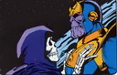

Forums galactiques > Taverne galactique : lieu de discussion informel > Machine a café [Rp!]
Pages : 1 2 ... 91 92 93 ... 443 444
| daetha Réputation à la taverne : 526  28/05 ETU 22:32 | Score : 0 Détails EDIT: oubliez ce que vous avez lu ici !!!
| ||
| Alkadrim Réputation à la taverne : 461  28/05 ETU 22:33 | Score : 0 Détails Alkadrim entendit des mots qui lui firent une immense peine... Mais ne l'avez t'il pas mérité. Il ne savait plus. Il l'aime tant. Il n'écouta pas la jeune femme et tenta de s'approcher un peu plus. Cependant une larme se mit encore à couler le long de sa joue droite. Son corps s'aprocha de sa bien aimée. Il pouvait sentir maintenant son souffle son visage. Un souffle si doux. Il la sentit si près de lui. Plus rien de comptait. Plus rien d'avait d'importance pour lui. Seule aerÿnn lui importait. Il murmura tout bas.
Pardonne moi. Pardonne moi ce que je t'ai fait. Je t'aime. Edit : En fait non, c'est bon comme ça | ||
| Arthérius Réputation à la taverne : 1559  28/05 ETU 22:43 | Score : 0 Détails Bon , qui veut un café ???
Daetha, j'ai loupé un épisode ... i c passé quoi ??? Aerynn, Café ??? Alk ??? OHE !!! M' ECOUTEZ ???? Rien a faire, au secours Daetha ! | ||
| -[Aerÿnn]- Réputation à la taverne : 2661  28/05 ETU 22:44  | Score : 0 Détails La force cessa et n'écoutant même pas Alkadrim, elle sortit enfin de la salle.
-- HRP : texte de Daetha édité page précédente avant le post d'Arthérius. Merci pour l'édit mais la prochaine fois, tu demandes avant, c'est pas compliqué. | ||
| Alkadrim Réputation à la taverne : 461 28/05 ETU 22:47 | Score : 0 Détails Voyant aerÿnn sortir, Alkadrim cria
AERYNN !!! | ||
| Arthérius Réputation à la taverne : 1559 28/05 ETU 22:49 | Score : 0 Détails Voyant Alk' sortir apres Aerynn, le barbare le choppa au vol ...
Mauvaise idée mon ami ... Je n'ai aucune idée de ce qu'il s'est passé avec Aerynn, mais elle a l'air perdue ... Laisse la réfléchir , une femme perdue peut blesser sans s'en rendre compte ... Pose tes miches ici et prend un kawa avec nous ... Daetha, Kawa ? | ||
| daetha Réputation à la taverne : 526 28/05 ETU 22:54 | Score : 0 Détails "Hein ? Euh...où est Atheos ?"
Elle selève brusquement en se tenat le crâne. Puis Atheos à quatre pattes arriva vers sa mère. Celle-ci laissa partir un soupir puis elle le prit dans ses bras. | ||
| Alkadrim Réputation à la taverne : 461 28/05 ETU 22:54 | Score : 0 Détails Alkadrim se retrouva assis sur une des chaises de la salle.. Il ne comprenait pas ce qu'il venait de ce passer... Il était là, en train de poursuivre aerÿnn... Et hop. Le voila sur une chaise.
| ||
| daetha Réputation à la taverne : 526 28/05 ETU 23:01 | Score : 0 Détails "Que c'est il passé ?"
| ||
| Alkadrim Réputation à la taverne : 461 28/05 ETU 23:03 | Score : 0 Détails Alkadrim bessa la tête et dit d'un ton triste.
Elle est partie. | ||
| khalim Réputation à la taverne : 488  28/05 ETU 23:03 | Score : 0 Détails Khalim, voyant qu'il n'avait plus grand-chose à faire ici, partit discrètement.
| ||
| Arthérius Réputation à la taverne : 1559 28/05 ETU 23:43 | Score : 0 Détails Alk, fo pas t'en faire ...
Jsuis persuadé qu'elle reviendra ... MAis toi, il faut que tu lui montre ce que t'as dans le palpitant ! Offre lui des fleurs, je sais pas moi ... Une femme, ca se controle pas ... Parle lui, ca sait écouter ... | ||
| daetha Réputation à la taverne : 526 28/05 ETU 23:46 | Score : 0 Détails "Arth, je t'arrête, les femmes se contrôlent parfaitement. Bon c'est vrai que je ne suis pas le bon exemple mais regarde An...euh... Jade, elle se contrôle, enfin je crois..."
| ||
| Booster Réputation à la taverne : 1494  29/05 ETU 00:04 | Score : 0 Détails Booster pénétra dans la salle de la machine à café, comme souvent tard le soir. Habituellement, elle était vide, ou alors quasiment. Mais il entendait des bruits de conversation dans la pièce.
*Eh bien, au moins je tuerai un peu l'ennui.* Quelle ne fut pas la stupeur de Booster lorsqu'il découvrit qu'Alkadrim était dans la pièce ! A vrai dire, il appréhendait ce moment depuis la veille, mais il ne se doutait pas qu'il se produirait si tôt... "B... Bonsoir, dame Daetha, Artherius... Alkadrim." | ||
| daetha Réputation à la taverne : 526 29/05 ETU 08:50 | Score : 0 Détails L'ambiance resta figée quelques heures durantes et cette fois Atheos n'y était pour rien. Daetha se tourna vers Booster et lui adressa un salut de loin. Puis elle s'approcha de la banquette, elle y déposa Atheos tout endormi et elle alla vers booster. Elle lui plaça un coup de boule dans le nez.
"Ca c'est pour faire souffrir un ami" Coup de pied "Pour avoir fait souffrir une amie" encore un coup de pied "Pour avoir par ta faute réveillé des pouvoirs de mon fils, je ne te le pardonnerai jamais !" | ||
| gorgutz Réputation à la taverne : 8  29/05 ETU 18:59 | Score : 0 Détails puis aprés cette partie de violence.
GORGUTZ fit apparition. il se dirigea vers le bar et demanda une bonne votka bon ce remettre les idées en place. (hhhhhhhhheu!est ce que j'ai le droit de BOOSTER moi aussi?) | ||
| Avoch Dar Réputation à la taverne : 77  29/05 ETU 20:03 | Score : 0 Détails Avoch Dar entra et fut surpis de voir son ami Booster le nez en sang et Daetha qui continuait de le frappé
Je dérange peut être? il alla aidé Booster a se relevé et lui tendis un mouchoir pour s'essuyer le nez Vien je t'offre un café! | ||
| daetha Réputation à la taverne : 526 29/05 ETU 20:12 | Score : 0 Détails Daetha se retourna, un peu énervée. Elle chercha son fils des yeux.
"Atheos ! Où es tu mon coeur ? Vous n'avez pas vu mon fils ?" | ||
| Thanos Réputation à la taverne : 227  29/05 ETU 21:40 | Score : 0 Détails Thanos arriva et fila droit ver daetha, cela fesais plusieur joursqu'il n'étais venu ici....:
"Qu'est il arrivé a Athéos ?" | ||
| Sombrecoeur Réputation à la taverne : 387  29/05 ETU 21:49 | Score : 0 Détails Sombrecoeur entra dans la salle, s'arreta un instant devant la scene qui se jouait devant lui, sourit d'un aire attendrit, se dirigea vers la machine, pris un café et alla s'installé dans le coin le plus obscur qu'il pusse trouver. Tout en buvant, il observait.
|
Pages : 1 2 ... 91 92 93 ... 443 444
Forums galactiques > Taverne galactique : lieu de discussion informel > Machine a café [Rp!]